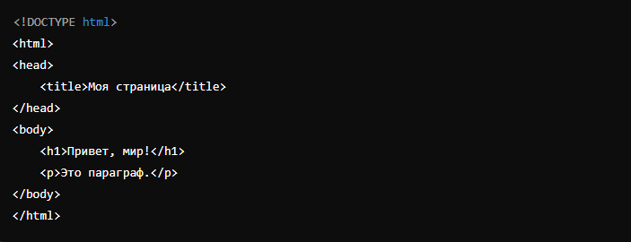

Введение в Document Object Model (DOM)
Document Object Model (DOM) — это программный интерфейс, который позволяет разработчикам взаимодействовать с HTML и XML документами в браузере. DOM представляет собой дерево объектов, где каждый элемент документа (например, теги, текстовые узлы) является отдельным объектом, которым можно манипулировать с помощью JavaScript.
- Структура DOM
-
document (корневой объект)
-
html (элемент)
-
head (элемент)
-
title (элемент)
- Текстовый узел: "Моя страница"
-
title (элемент)
-
body (элемент)
-
h1 (элемент)
- Текстовый узел: "Привет, мир!"
-
p (элемент)
- Текстовый узел: "Это параграф."
-
h1 (элемент)
-
head (элемент)
-
html (элемент)
- Доступ к элементам DOM
getElementById: Возвращает элемент с определенным идентификатором (id).getElementsByClassName: Возвращает коллекцию элементов с определенным классом.getElementsByTagName: Возвращает коллекцию элементов с определенным тегом.querySelectorиquerySelectorAll: Возвращают первый элемент или все элементы, соответствующие CSS-селектору.- Манипуляции с DOM
- Изменение текста элемента: С помощью свойства
textContentможно изменить текст внутри элемента. - Изменение атрибутов: Атрибуты элемента, такие как
src,href,class, могут быть изменены с помощью методовsetAttribute,getAttribute,removeAttribute. - Создание и добавление элементов: Новый элемент создается с помощью
document.createElement, а затем добавляется в DOM с использованием методовappendChild,insertBeforeи других. - События в DOM
- Назначение обработчика события: Используется метод
addEventListener. - Типы событий: В DOM существует множество событий, включая
click,mouseover,keydown,submit, и многие другие. - Навигация по DOM
parentNode: Возвращает родительский элемент.children: Возвращает коллекцию дочерних элементов.nextSiblingиpreviousSibling: Возвращают следующий и предыдущий соседние узлы.firstChildиlastChild: Возвращают первый и последний дочерние узлы.- Удаление элементов из DOM
DOM представляет HTML-документ как иерархическое дерево. Корнем этого дерева является объект document, который содержит все элементы страницы. Каждый узел в дереве представляет собой элемент (тег), текст или атрибут.
Пример структуры DOM:
Эта HTML-разметка будет представлена в DOM следующим образом:
Чтобы манипулировать элементами на странице, нужно сначала получить доступ к ним.
Существует несколько способов сделать это:
Пример:
// Получаем элемент по ID
let header = document.getElementById("main-header");
// Получаем все элементы с классом "content"
let contents = document.getElementsByClassName("content");
// Получаем первый параграф
let firstParagraph = document.querySelector("p");
// Получаем все параграфы
let allParagraphs = document.querySelectorAll("p");
После получения доступа к элементу можно изменять его содержимое, стиль, атрибуты и даже создавать или удалять элементы.
Пример:
let header = document.getElementById("main-header");
header.textContent = "Новый заголовок";
Пример:
let image = document.querySelector("img");
image.setAttribute("src", "new-image.jpg");
Пример:
let newDiv = document.createElement("div");
newDiv.textContent = "Это новый элемент";
document.body.appendChild(newDiv);
События в DOM — это различные действия, которые могут произойти на веб-странице (например, щелчок мыши, нажатие клавиши). В JavaScript можно назначить обработчики событий, чтобы реагировать на эти действия.
Пример:
let button = document.querySelector("button");
button.addEventListener("click", function() {
alert("Кнопка нажата!");
});
DOM позволяет перемещаться по его структуре с помощью различных свойств:
Пример:
let firstParagraph = document.querySelector("p");
let parent = firstParagraph.parentNode;
let nextElement = firstParagraph.nextSibling;
Чтобы удалить элемент из DOM, используется метод removeChild:
Пример:
let parentElement = document.querySelector("div");
let childElement = document.querySelector("p");
parentElement.removeChild(childElement);
Также существует метод remove, который можно применить непосредственно к элементу:
Пример:
let element = document.querySelector("p");
element.remove();
Заключение
Понимание и работа с DOM — это ключ к созданию динамических и интерактивных веб-страниц. DOM предоставляет мощные инструменты для взаимодействия с HTML-документом, изменения его структуры и стиля, а также обработки событий. Владение этой темой открывает широкие возможности для веб-разработчиков в создании современных и отзывчивых пользовательских интерфейсов.